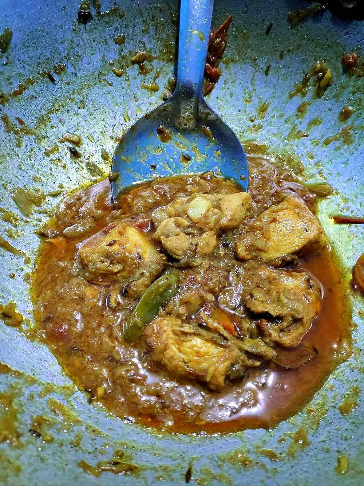

Kolhapuri Chicken Rassa
thin, fiery red chicken curry built on roasted coconut and dagad phool

Contains: peanuts, sesame
Checked against the ingredient list for ten allergens: milk, egg, fish, crustaceans, tree nuts, peanuts, sesame, mustard, soy and gluten. Brands vary, so read the label on anything new to you.
Ingredients
Quantities for 4.
- 800g, on the bone, cut into curry pieces Chicken
- 3 medium, 2 for the masala and 1 for the gravy Onion
- 60g, grated Dried Coconutkhobra; roasted almost black, this is the backbone of kala masala
- 3 tbsp, freshly grated Coconutoptional
- 10 cloves Garlic
- 4cm piece Ginger
- 2 tbsp Kashmiri Chillifor the red without wrecking anyone
- 1.5 tsp Chilli PowderKolhapur would use more
- 1 tsp Stone Flowerdagad phool; the smoky note that makes this taste Kolhapuri
- 1 tbsp Poppy Seedsoptional
- 1 tbsp Sesame
- 1 tbsp Coriander Powder
- 1 tsp Cumin Seeds
- 1 tsp Black Pepper
- 4 Cloves
- 2cm piece Cinnamon
- 1 Black Cardamomoptional
- 1 Bay Leafoptional
- 1/2 tsp Turmeric
- 5 tbsp Groundnut Oil
- 600ml Water
- 4 tbsp, chopped Coriander Leavesoptional
- to taste Salt
Cookware
stovetop, kadhai, blender
Before you start
- Marinate the chicken with the turmeric, half the ginger-garlic and 1 tsp salt for 30 minutes in the refrigerator.
- Roast the whole spices, the dried coconut and the sesame separately, then cool them completely before grinding. Warm spices grind into a paste that turns bitter.
- The rassa is meant to be thin and drinkable. Keep 600ml water to hand and do not let it reduce to a thick gravy.
Method
- Grind the ginger and garlic to a paste and rub half of it into the chicken with the turmeric and salt. Leave 30 minutes.
- Dry-roast the grated dried coconut over low heat for 5 minutes until it is dark brown and smells toasted, then tip it out immediately.Dark brown, not black. Burnt coconut makes the whole pot bitter and there is no fixing it.
- In the same pan, dry-roast the cumin, black pepper, cloves, cinnamon, black cardamom, stone flower, poppy seeds and sesame for 2 minutes until fragrant. Cool completely.
- Fry 2 sliced onions in 2 tbsp of the oil over medium heat for 10 minutes until deep brown, then cool.
- Grind the roasted coconut, roasted spices, fried onion, kashmiri chilli, chilli powder and coriander powder with 100ml water to a smooth dark masala.
- Heat the remaining oil in a heavy pan with the bay leaf, add the last onion, finely chopped, and cook 8 minutes until golden.
- Add the remaining ginger-garlic paste, fry 1 minute, then add the chicken and sear over high heat for 5 minutes until the pieces are opaque all over.
- Stir in the ground masala and fry over medium heat for 8 to 10 minutes, scraping the base, until it darkens and oil pools at the sides.This is the step that decides the curry. Under-fried masala tastes raw and grainy no matter how long you simmer it afterwards.
- Pour in the water, season with salt, bring to a boil then simmer uncovered 25 minutes until the chicken is tender and a red film of oil floats on the surface.
- Stir in the fresh coconut, if using, check the salt and finish with coriander.
- Rest 10 minutes off the heat and serve with bhakri or chapati and raw onion.
Storage
Keeps 3 days refrigerated and is better the next day. Reheat over low heat with a splash of water; it also freezes well for 2 months.
Nutrition Medium estimate
High protein: 48+ g a serving, 31% of the calories
| Per serving362 g | Per 100 g | |
|---|---|---|
| Calories | 626+ kcal | 174+ kcal |
| Protein | 47.9+ g | 13+ g |
| Carbohydrate | 22.6+ g | 6+ g |
| of which sugars | 6.0+ g | 2+ g |
| Fibre | 8.9+ g | 2+ g |
| Fat | 39.9+ g | 11+ g |
| of which saturated | 16.8+ g | 5+ g |
| of which unsaturated | 19.8+ g | 6+ g |
The + means ingredients given to taste rather than by weight are counted as zero, so the true figure is a little higher than shown. Worked out from the listed quantities. Some of the ingredient list is given to taste rather than by weight, so treat these as a guide. Ingredients given to taste rather than by weight are counted as zero, so the real figure is a little higher than this. The + says so. Some ingredients have no exact match in the nutrient database and use the nearest equivalent: stone flower. Estimated from raw ingredients using USDA FoodData Central. Cooking changes are not modelled, and added salt is excluded, so sodium is not given.
Written and checked against sources, not cooked in a test kitchen. Times, yields, allergens and nutrition are worked out rather than measured, so use your own judgement on doneness and on storing. More in About.